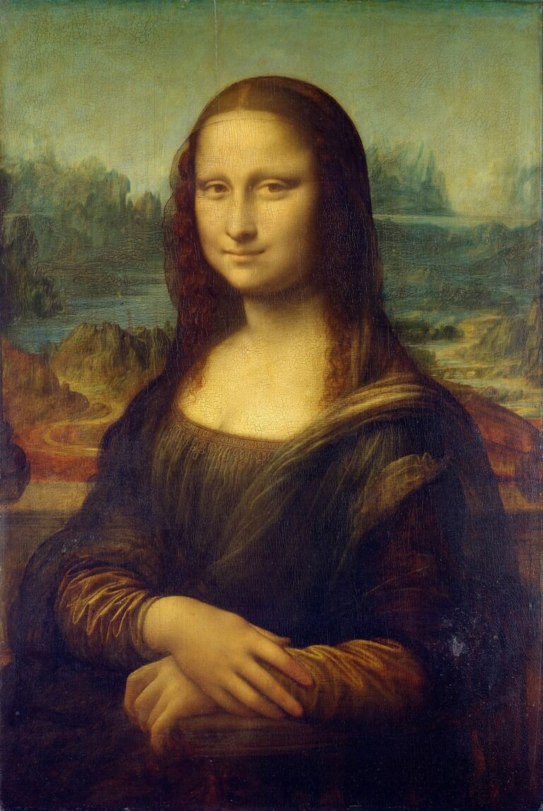
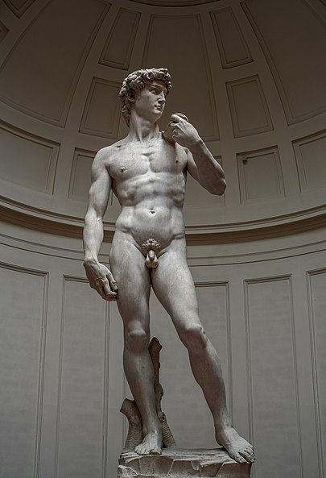
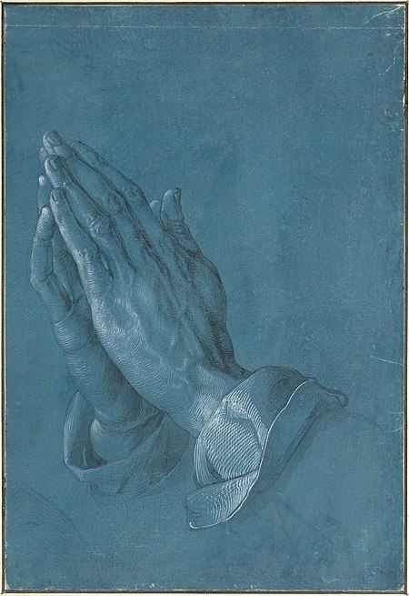

La Gioconda, más conocida como la Monna Lisa. Es un retrato de Lisa Gherardini, una pintura al óleo hecha por el artista Leonardo Da Vinci.
David,es una escultura de Mármol blanco,una obra realizada por el artista Miguel Ángel Buonarroti
La escultura representa al rey David bíblico, momentos antes de enfrentarse a Goliat.
Manos Orantes, es un dibujo a pluma y tinta hecho por el artista Alberto Durero